Ідея 2 · шеврон, рух уперед
«Курс»
Квадрат – об’єкт під охороною. Два шевронні просвіти під 45° розтинають його на вістря, шеврон і хвостовик: рух уперед і два рубежі охорони в одній фігурі.
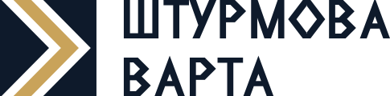
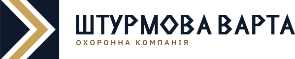
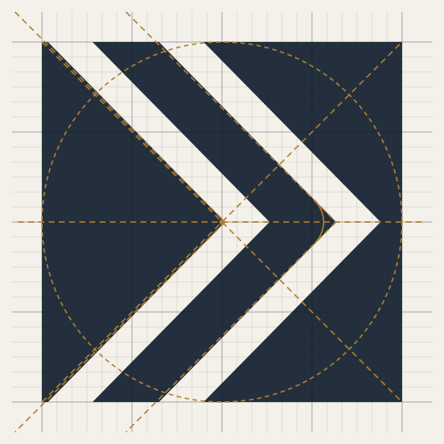
Побудова
- Квадрат 24 × 24 модулі (120) – найстабільніша форма, тримає аватарку і вивіску.
- Просвіти – 10,5 по нормалі, вершини на горизонтальній осі в точках x = 61 і x = 98.
- Кут при вершині 90°: лінії під 45° чисто лягають на піксельну сітку, на 16 px немає «сходинок».
- Середній шеврон – 15,7 по нормалі, як стійка в написанні.
- 13 вузлів – найпростіший знак з трьох.
Тест читабельності
Просвіти читаються як «»» – рух праворуч, уперед. Квадрат дає вагу й спокій. Ризик: кнопка «перемотати» і подвійний шеврон Citroën. Пом’якшення: шеврони не накладені, а прорізані в квадраті; кут 90° (у Citroën гостріший і вертикальний напрям); горизонталь – не звання і не нарукавний знак.
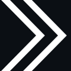
Зліва – справжній розмір у браузері (64 / 32 / 16 px), справа – растр 32 і 16 px, збільшений без згладжування.
2 · Емблема-нашивка
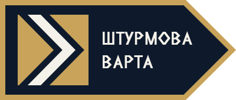
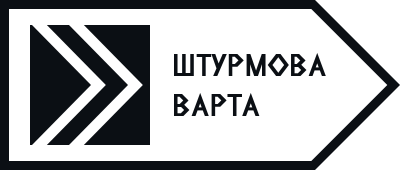

Нашивка-вказівник з вістрям 90° – той самий кут, що в знаку.
3 · Шрифтовий логотип
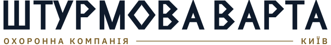
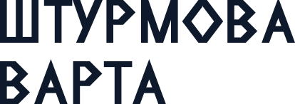
Чаші «В» і «Р» та літера «О» – з вістрями під 45°, як шеврони знака; «А» з гострою вершиною. Написання саме «рухається» праворуч. Літери накреслено з нуля в кривих (стійка 16, горизонталь 13,5, діагональ 16,5 на висоту 100), кернінг – попарно.
Носії
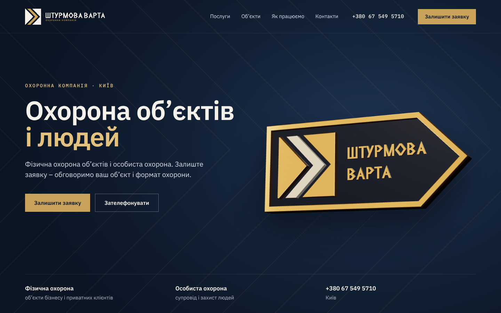
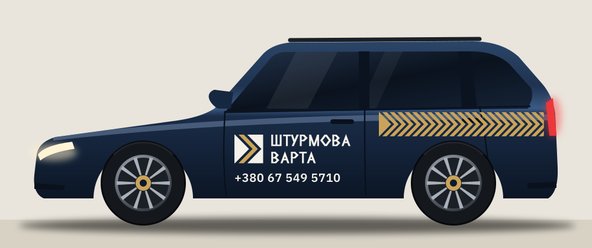
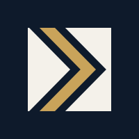
Чесно про слабкі місця
- Найабстрактніший: без написання не каже «охорона», лише «рух».
- Шеврон-патерн легко скотити в «спортивний» стиль – потрібні правила в брендбуку.
- Написання з гострими «О» і «В» – найменш нейтральне; на довгих рядках (вивіска, бланк) може втомлювати.